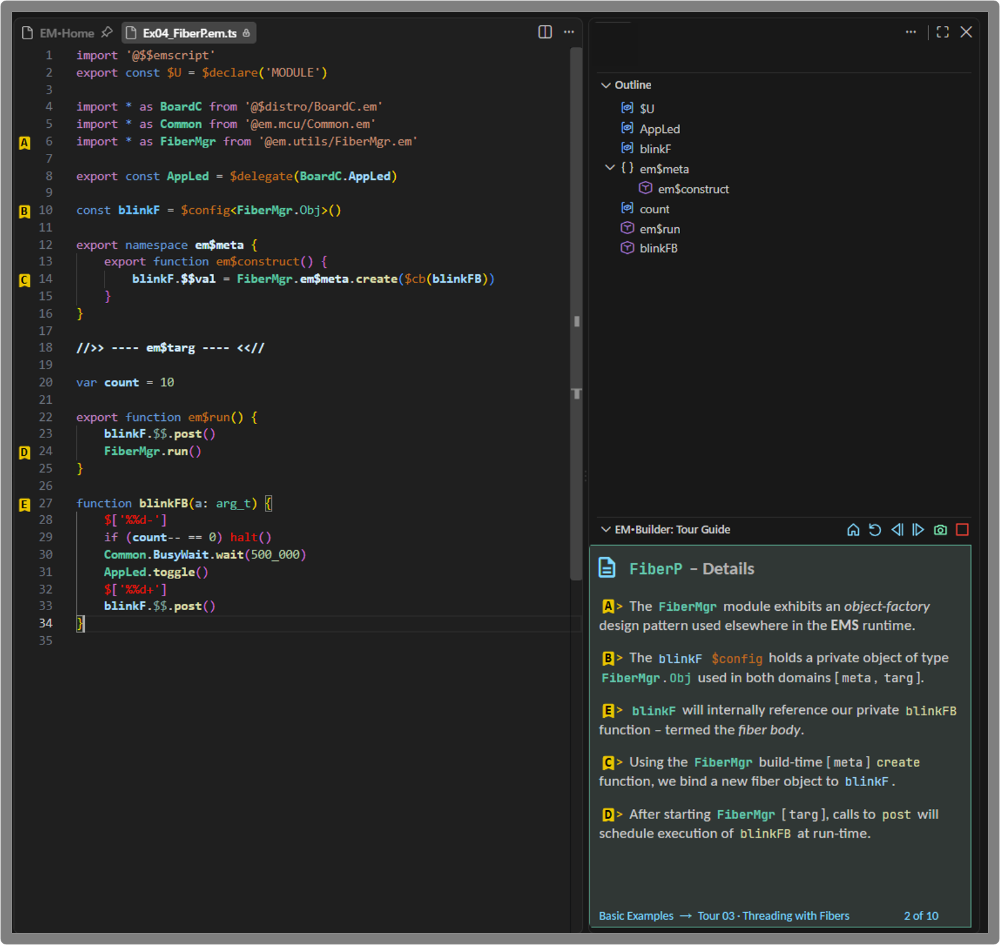
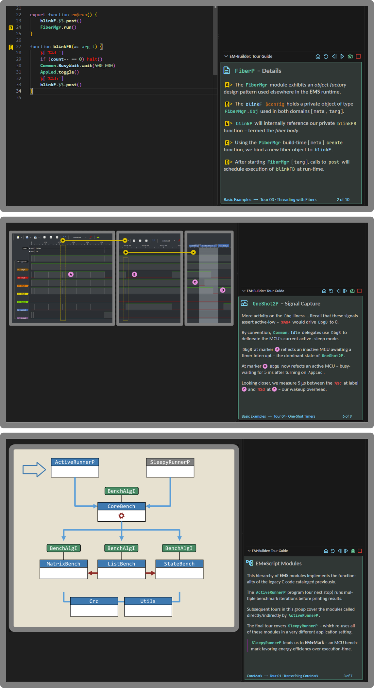
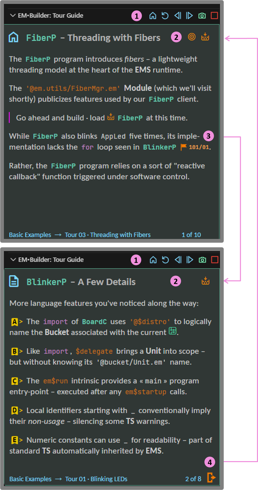
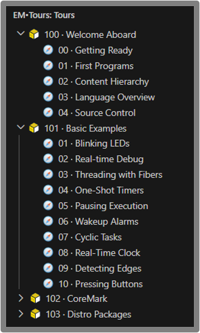

Learning from the code outward
Working code provides the strongest anchor when learning a new programming language.
EMTours use that anchor as early as practical – letting concepts emerge from programs, modules, and behavior already on the screen.
Let EMScript lead the way
EMScript introduces novel language constructs unfamiliar to even seasoned embedded programmers.
Rather than explain in the abstract, begin with working code and let each new program lead the way:
➤ start with
a simple program
➤ drill down
into the underlying code
➤ move on to
a richer program and repeat
➤ let new
concepts surface as the code demands
Let EMTours provide the context
EMTours add just enough guidance – what to notice, why it matters, and where to look next.
The code remains at the center of attention; the tour simply guides the way onward and outward.
Explain first “Show me the code !!”
A new programming language naturally invites explanation – syntax, semantics, terminology, design principles, and plenty more.
But explanation alone quickly turns abstract. Programmers want something concrete to inspect, execute, analyze, and question.
Code first “What am I looking at ??”
Jump straight into a repository and the opposite problem appears. Source files abound; something clearly runs; but where should you start ??
Familiar code written in C/C++ or TypeScript
often yields clues at a glance.
EMScript also
looks "familiar" – until constructs
like
$config ,
$proxy ,
and em$meta begin to challenge
those first impressions.
Even experienced embedded programmers need a few signposts – what matters here, how these pieces relate, and where the code takes you next.
Put some guidance beside the code
The problem suggests a simple remedy: keep the code and guidance close together – each complementing and reinforcing one another.
Code on display
An EMTour treats working code much like a museum treats an artifact: something to see clearly, to study closely, and to understand in context.
The code stays at the center. Everything else helps the viewer appreciate what stands in front of them.
Small cards beside each artifact
Museums place small cards besides each artifact – providing enough context to understand what you’re seeing, without competing for your attention.
EMTours follow suit. Brief guidance stays close at hand, while the code remains fully visible.
Discrete markers that say “look here”

Discrete markers sit out in the editor gutter – clearly visible, yet kept away from the source code itself.
Each marker links guidance to a specific point in the code – without obscuring what you've come to see.
One idea at a time
An EMTour unfolds as a short progression of stops focused on a single artifact: a source file, a diagram, a waveform, or any object worth examining.
When an artifact requires more attention, the tour simply stays with it for another stop – continuing the story without piling on too much at once.
A familiar cadence
Most EMTours run just six to eight stops – enough room to develop an idea without turning the journey into a marathon.
A familiar rhythm soon emerges: a Welcome up front, a steady sequence through the middle, then Extra Credit and Next Steps at the end.
And you control the pace: moving quickly, or else pausing where the material asks for more attention.
Changing scenery

Different artifacts demand different perspectives. The EMTours offer familiarity from stop to stop.
Skim first
Nothing says you have to take an EMTour slowly. Flip through the stops, glance at the artifacts, and first get a feel for where the tour wants to take you.
Like thumbing through a new book, a quick pass can reveal just enough of the codescape to decide where you'll want to linger.
Freely navigate

Home·Refresh·Back·Next·Exit
– at every stop.
Reveal, Build, and more – actions in
context.
Edit Execute Explore
A museum tour may invite you to pause, circle back, and look more closely. EMTours go further – keeping EMScript code completely within your grasp:
➤ edit source
code that catches your attention
➤ execute a
program and watch what happens
➤ explore the
results and follow where they lead
At any stop, move seamlessly into your normal development loop – and continue touring when ready.
First, get oriented
Before diving deeply into the code, a short Welcome Aboard bundle puts the workspace, terminology, and basic EMScript environment into place.

The final orientation tour [100/04] establishes a safe sandbox for hands-on coding to come. From the 101 tours onward, working programs lead the way.
Tours 101 :: the code takes over
EMTour 101/01 opens with a simple blinking LED. Each tour that follows maintains this familiar behavior – while changing the machinery underneath.
Fibers, timers, alarms, clocks, buttons, and real-time debug progressively deepen the codescape – with working EMScript code always leading the way.
Tours 102 + larger · deeper · broader
EMTours 102 covers CoreMark – a larger application with more code, more modules, and richer interactions to explore.
EMTours 103
dives deeper into
$distro
packages which support EMScript across different MCUs.
Broader areas like low-power wireless then follow.
More than a repository
The EMporium brings together working EMScript code plus illustrative EMTours into one locale.
More than a source repository, the EMporium offers context, structure, and a path for exploration.
A burgeoning collection
With each new release, the EMporium expands its collection of code, examples, and guided tours.
New EMScript content brings new EMTours for exploration – like chapters in an ever-growing book.
Enter the EMporium
Ready to look around ??
{kind=link}
See you inside !!